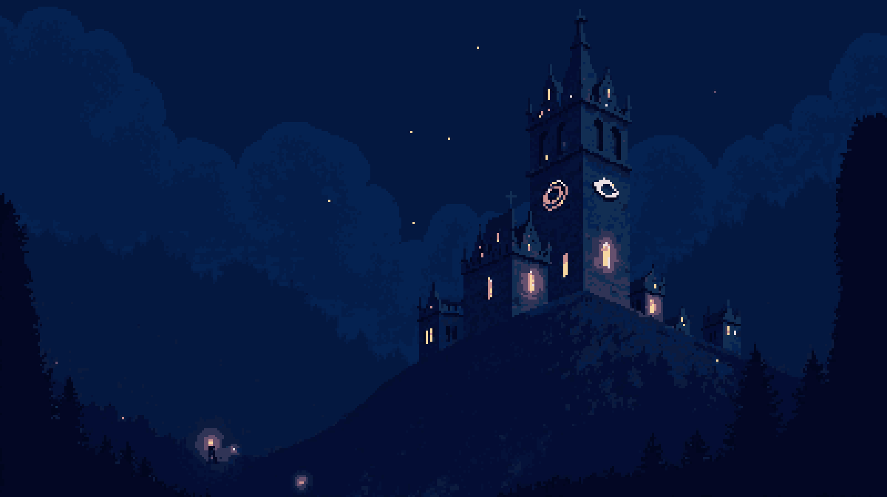

Vigilia de Ceniza
Códice del Velador
Edición del coleccionista · Todo lo que se sabe de Hondavela, y algo de lo que se teme

«Desde entonces nadie duerme en Hondavela.»
Para iPhone y iPad · pago único, sin anuncios ni compras
| Libro | Contenido | |
|---|---|---|
| I | Lore y mundo | Hondavela, sus gentes, cada región con sus secretos, el Diario y el Lecho |
| I·b | Crónica y atlas | La cronología, las casas y facciones, los lazos entre personajes, los objetos que cuentan la historia |
| II | Arsenal | Armas, escudos, amuletos, consumibles y reliquias |
| III | Personajes, bestiario y jefes | Los que aún hablan, los que ya solo golpean y los que guardan las puertas |
| IV | Guía del Insomne | Controles, combate, hogueras, puzles, ciclos, accesibilidad, logros y los mapas de cada zona |
Vigilia de Ceniza es un soulslike de pixel art para iPhone y iPad (Android, próximamente). Hondavela, el Insomne, los Desvelados y todo lo que contienen estas páginas son invención original.
Índice
Cómo leer este códice
Las cifras (vida, daño, Ceniza) son las de la versión actual del juego y el primer ciclo. Hondavela cambia con cada versión: si algo no cuadra, gana lo que veas en tu pantalla.
Las fichas de jefe, de enemigo y de arma llevan su imagen tal como aparece en el juego. Los mapas del Libro IV son capturas de cada zona entera, sin la oscuridad de la vigilia: muestran más de lo que verás desde dentro.